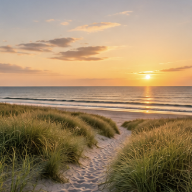
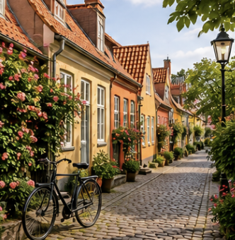
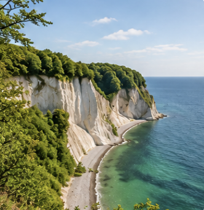
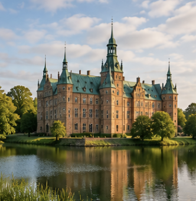

Fra pris

Fra pris

Fra pris

Fra pris
Du behøver ikke rejse langt for at opleve noget stort. Danmark byder på et væld af oplevelser, som kan findes lige rundt om hjørnet – fra smukke kyststrækninger og grønne skove til hyggelige byer, historiske steder og lokale perler.
Med en staycation i Danmark kan du mindske dit klimaaftryk ved at undgå lange flyrejser og i stedet vælge en ferie tættere på hjemmet. Når du rejser lokalt, får du samtidig mulighed for at opleve nye sider af Danmark og opdage steder, du måske aldrig har besøgt før.
Tag på weekendtur til en dansk by, gå en tur langs kysten, udforsk naturen eller besøg nogle af de mange lokale seværdigheder. En ferie behøver ikke være langt væk for at føles som et afbræk fra hverdagen.
Oplev Danmarks natur, byer og lokale perler, og få en ferie fyldt med gode minder, nye oplevelser og mere omtanke for miljøet.